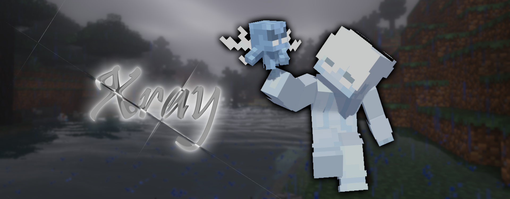
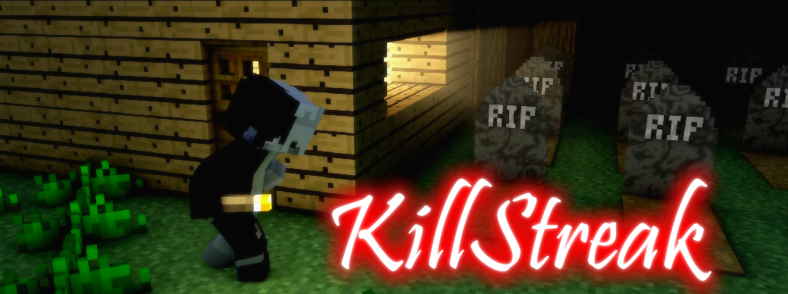

PHASE-07
PHASE-07には「新ウェポン」「新モード」が追加されます。
HELLO NEWCOMER
エクスレイ ❝Xray❞

あらゆる壁を貫通移動するヴェックスが、イミテイターとしてBowyersMCへ参戦します。
使用時に召喚したヴェックスがブロックに衝突した瞬間、その点を中心とし一定範囲が透過される。
敵からは透過されている範囲が黒い点滅で表示され、目が開いたと警告が全体へ発せられる。
さらに効果時間中に放つ矢は、0.75秒後に消滅するが全てのブロックを貫通する。
広範囲の障壁を透視できるようになる唯一の変化系ウェポン！
更に詳しい情報はウェポン紹介ページより。
WEAPON ADJUSTMENTS
一部ウェポンのバランスが調整されます。
 パラレル ❝Parallel❞
パラレル ❝Parallel❞
・初回使用の効果継続時間を1秒から0秒に
 ヴァニッシャー ❝Vanisher❞
ヴァニッシャー ❝Vanisher❞
・鎧がない時にCTを13秒から10秒に
 ツインズ ❝Twins❞
ツインズ ❝Twins❞
・鎧がない時にCTを15秒から10秒に
 イエティ ❝Yeti❞
イエティ ❝Yeti❞
・鎧がない時にCTを15秒から14秒に
NEW GAME MODE
キルストリーク ❝KillStreak❞

PHASE-07では新モード「キルストリーク」が試験的に追加されます。
このモードはデスマッチ形式で、何度も復活でき、連続5キルを達成した弓師が勝利になるゲームモードです。
更に詳しい情報はKillStreak概要ページより。
SYSTEM ADJUSTMENTS
・LevelingをRotationに名称変更
・GroupingをSquadsに名称変更
・スナイパーモードを内部実装
・練習場のウェポンを、セレクターで取り出す形に変更
・練習場のウェポンからすべてのサプライを削除
・ペットの上限金額を10000に設定。